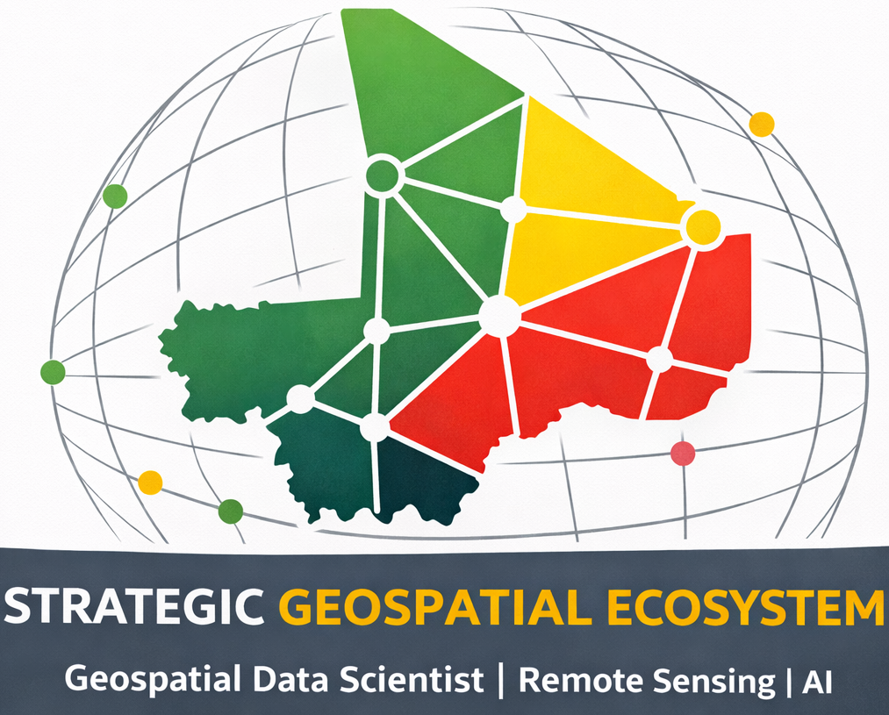

Geospatial Data Scientist | Remote Sensing | AI
Earth Observation • Research • Innovation
International portfolio focused on Earth Observation, Geospatial AI and Population Mapping.
Geospatial Data Scientist with expertise in satellite monitoring and AI.
Earth Observation, Population Mapping, Climate Monitoring.
International research and development collaboration.
Digital census and spatial population estimation.
Earth Observation dashboard and analytics.
Strategic geospatial innovation platform.
Publications and citations
Research profile